Eat and Drink in Mashhad
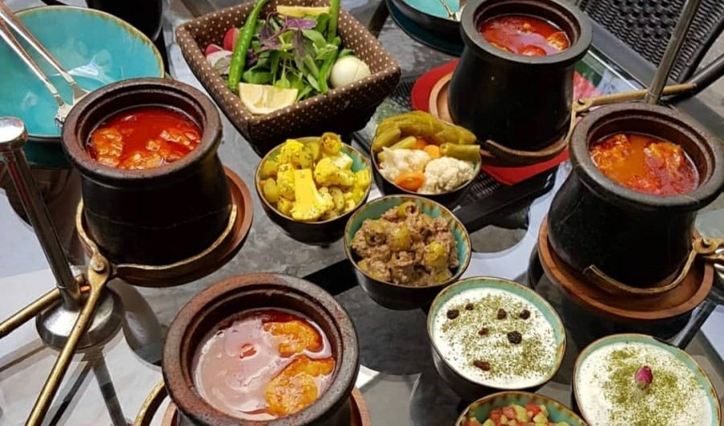
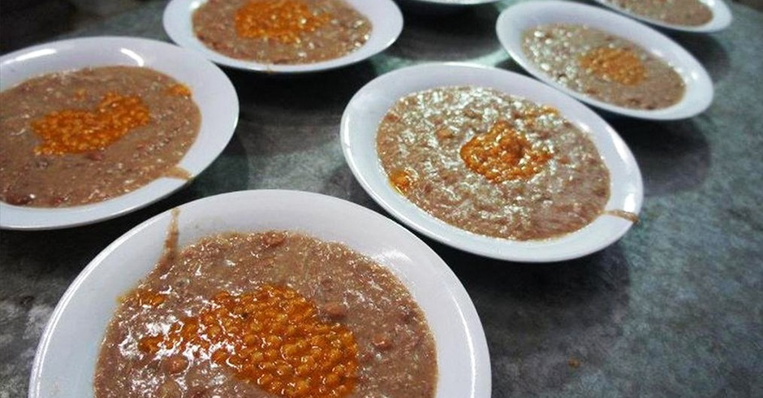
Sholleh is one of the traditional dishes of Mashhad. As many grains
are used in this dish, this is a complete meal. Sholleh is actually
a kind of Ash. The people of Mashhad use this food as one of the
most common vows. This delectable dish is made of veal, beans,
chickpeas, white beans, mung beans, lentils, wheat grits, semi rice,
salt, red pepper, black pepper, cardamom, nutmeg, ginger and
cinnamon. The more meat used in the shell, the tasty it is.
Polo Makhlout is the same Stambouli Polo or Lobia Polo. This
delicious meal includes; meat, rice, carrots, green beans and
various spices. The meat in this dish is usually used as pellets or
so-called “Ghelgheli”.
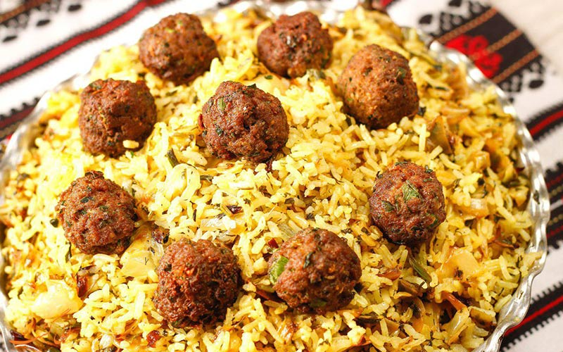
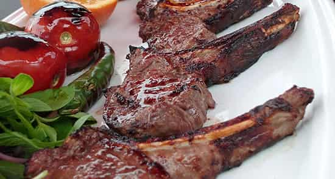
Shishlik kebabs are among the popular and well-known dishes. This
popular dish consists of six slices of fresh lamb served in Chandiz
and Mashhad with its bones. This delicious dish is popular not only
in the country but abroad. Since high quality meat is used in
preparation, it is one of the expensive foods.
Rivas is one of the traditional dishes of Khorasan Razavi and
Neyshabur. Rivars is a plant that grows in spring and in mountainous
areas, and it is cooked in all areas of the country that have access
to Rivas. This food is usually cooked in spring. This delicious and
traditional dish has a sour taste that is very delectable because of
the Rivas. Raw materials for making this dish are, Rivas, meat,
onion, sugar, mint and fresh parsley.
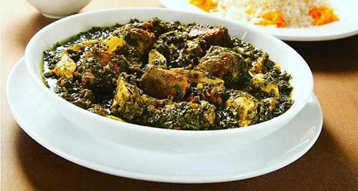
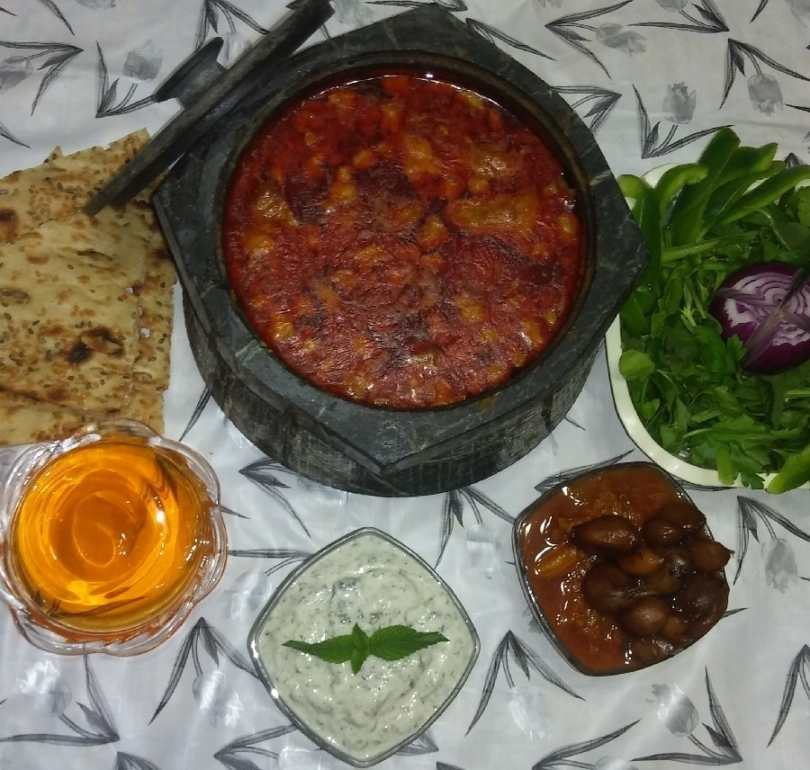
Abgousht Sangi is a type of Abgousht cooked in stone containers.
These containers are among the handicrafts of Mashhad. One of the
reasons it tastes good is because of the stone dish used to cook it.
This dish uses mutton, beans, chickpeas, potatoes, pastes and
spices.
Reshteh Polo is a common dish between the cities of Mashhad, Ardebil
and Kermanshah, but their different style of cooking makes it
tastier. In the Mashhadi type of Reshteh Polo, chicken is used as
the main part of the meal, though sometimes it is used instead of
minced meat and dates. Reshteh Polo is one of the favorite Iranian
dishes cooked in Iranian homes on New Year’s Eve.
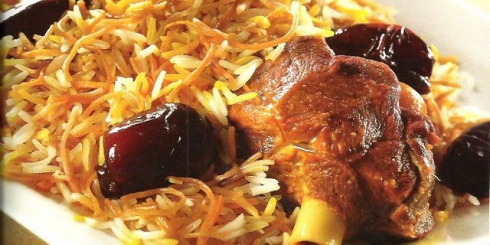
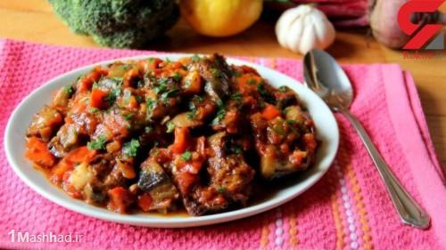
Yatimcheh is one of Mashhad’s popular foods. This dish has no meat
and is one of the cheapest dishes in Mashhad. It is also easy and
quick to prepare. Mashhadi Yatimcheh uses lentils, beans, chickpeas
and most importantly eggplant. Whey, tomato and hot mint are also
seasonings used to bake oranges according to people’s tastes.
Eshkeneh Ghorot is the same Kale Joush or Eshkene Kashk which is
called by Eshkene Ghorot in Mashhad. It is high in calcium because
widely whey is used in the preparation of this meal. In this dish
also uses hot walnuts and mint.
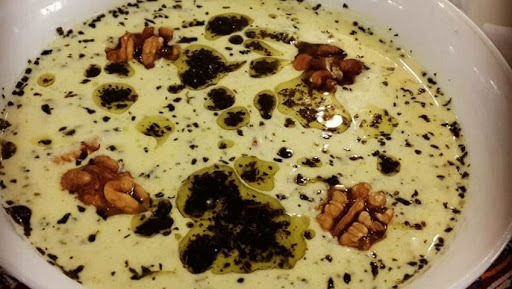
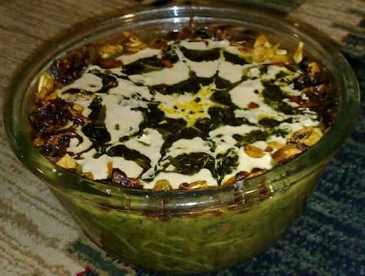
Ash Lakhshak is almost the same as Ash Reshte which uses only
lentils instead of beans. Lakhshak is the name of the wide and long
strands that were used by women in the past at home. Commonly used
with this soup are whey, hot mint, garlic and hot onions as a
seasoning.
Digcheh is a traditional dessert in Mashhad. This dessert is very
similar to Shir Berenj (rice milk), The difference is that Digcheh
is more cooked than the Shir Berenj and cooks a little more. The
Digche is a type of saffron that is used in baking milk instead of
water. Digcheh has a high spiritual status among Mashhad residents
and is cooked and distributed as a vow at religious ceremonies.
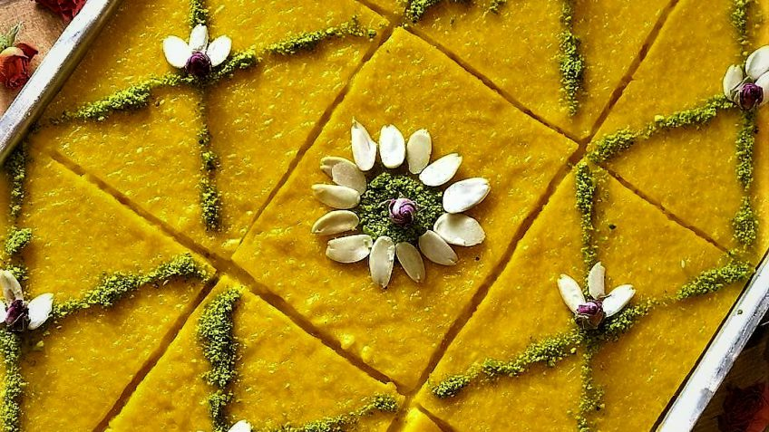
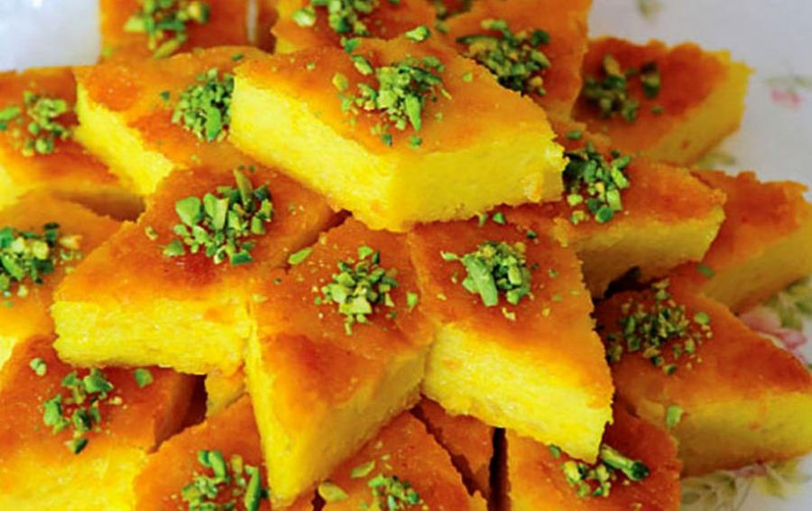
Sweet Koko is also a popular Mashhad food that can be served both in
food and dessert and in hot and cold. At luxurious Mashhad parties,
Sweet Koko is considered of the fixed food of tablewares.
Ingredients include potatoes, eggs, saffron and corn flour. So far
it’s almost like Potato Koko, but this dish is unique when the
Mashhadis use sap on it. The sap is made with sugar, water, rose
water and saffron and pours on it when it is cool.
Maghout is a type of Halva that is also called Mashhad Masghati.
They use saffron and almonds to flavor this halva.
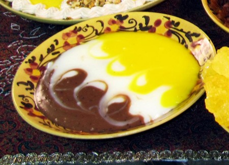
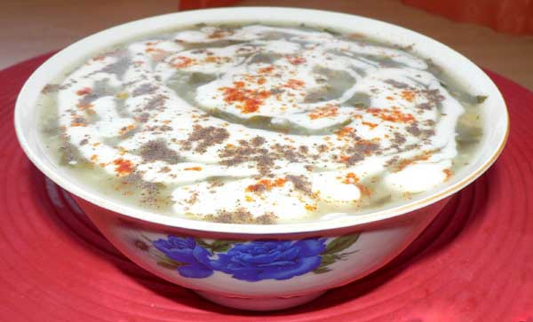
Ash Musti is one of the other dishes of Mashhad. Because of its
lightness, it is sometimes eaten as a snack and even as a light
meal. This Mashhad local dish combines garlic, chicken breast,
cotyledon, onion, yogurt, dried dill, laurel leaves, mint and other
spices.
Chai, an Iranian drink that you cannot overlook!
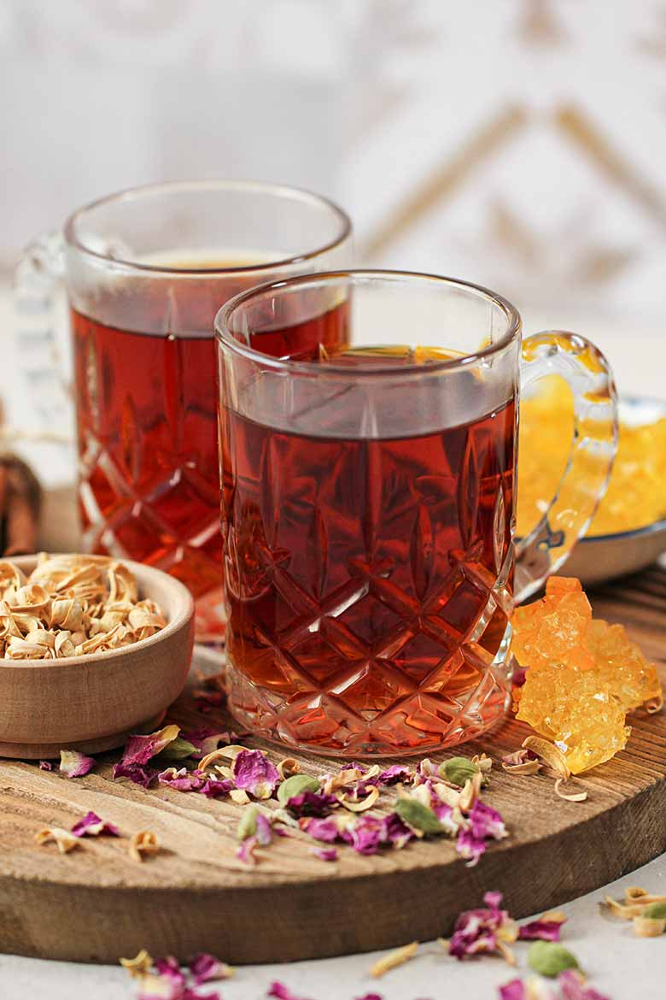
Tea holds a special place in Iranian culture, and Mashhad is no
exception. In most Iranain houses, there is chai, hot black tea with a
deep reddish-brown color as a drink that paves the way for socializing,
fatigue relief, and also served during breakfast in Iran. It is mostly
served with a sugar cube. It is an interesting activity to learn how to
drink tea while you keep the sugar cube in your mouth. Don’t forget to
try it! Sometimes Iranians flavored their tea with pieces of Persian
dried lime (limu Omani), dried bitter orange, or a piece of cinnamon
stick. Sugar cube, rock candy, and different kinds of dates are the main
companions of tea in Iran. It is traditionally served in glass cups
saucers since tea lovers believe that they should see the color of tea
while drinking it!
Sharbat, an Iranian drink that cools!
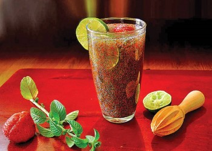
A chill sweet drink, sharbat, is a great choice to make you relax in
the hot weather. There are some kinds of sharbat for summertime. Here
we can take a look at them.
Sharbat-e sekanjebin
Made of honey, vinegar, sekanjebin is a favorite summer sharbat in
Iran. Most of the time, it is seasoned with mint. You can mix one part
of sekanjebin with two parts of water in order to have a sweet sharbat
for hot days of summer. You can also put some pieces of cucumber or
leaves of mints to Sharbat in order to have better taste. This magic
mixture makes you feel fresh and healthy!
Sharbat-e tokhm-e sharbati
tokhm-e sharbati (basil seed) is the main ingredient of this exotic
sharbat. It is mostly mixed with rose water and sugar. It is a great
sharbat in hot weather.
Sharbat khakshir
khakshir (herb-Sophia) are little red-brown seeds. In Iran, khakshir
plant is planted and harvested as a crop in different cities such as
Hamadan, Mashhad, Shiraz and Isfahan. Khakshir produced in the cities
of Neishabour and Mashhad naturally has a darker color than the
products of other cities.
The Sharbat Khakshir is the sweetened cold
water, and rose water. The seeds are settled on the bottom of the
glass, so it is better to stir it up before drinking.
All things you should know about alcohol in Iran:
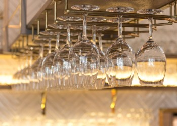
Is alcohol prohibited in Iran? The answer is definite YES! Consuming,
buying, and selling alcoholic drinks are illegal inside the borders of
Iran. Hence, there is no bar or liquor shop inside Iran providing
alcohol. As a tourist, there is no exception for using alcohol in
Iran. It is a law in the country, which banned drinking, buying, and
selling alcohol in this land for everyone. Maybe you heard about the
myth that hotels and cafes in Iran provide alcohol for foreigners. It
is not true! There is no place that you can order alcohol in this
country. As you may see bringing or drinking alcohol is illegal as it
may result in some punishment in Iran. So do not disregard this law
while staying in Iran! Like other illegal products, you may find some
alcoholic drinks produced or smuggled in Iran. Besides the legal
consequence, these products may threaten your health. So it is better
to plan for an alcohol-free vacation while traveling the country!